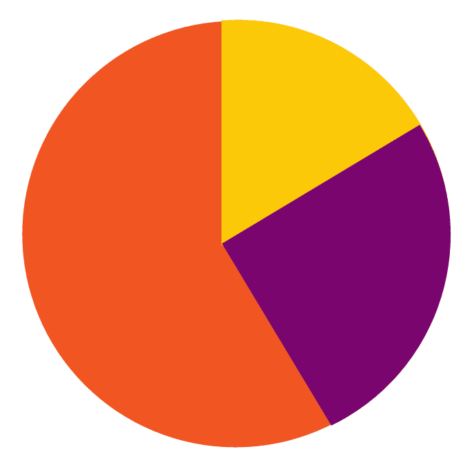

How old are you?
You are part of Gen Y

- 48%of you voteWe get that some of you can't vote yet, but that's still a dismal turnout
- 0.004%are currently in jailThat is 4,900 of you
- $12,000is the median net worth of people your generationThe younger half only have a median net worth of $1,000
- The Silent Generation thinksYou are just happy to accept what life hands you (or maybe that's just Kate's Grandma)
- Baby-boomers thinkThink you are technological whizz kids and treat you like their personal IT helpdesk
- Generation X thinkThat your childhood was far too cushioned and you think you're god's gift to the world
You are part of Gen X
- 71.7%of you voteYour generation votes 15% less than your parents and 20% less than theirs. What attitude are you passing on?
- 0.003%are currently in jailThat's 2,850 of you
- $120,000is the median net worth of people your generationYou've had up to 3 decades in the workforce and you have less than half of your parents' net worth
- The Silent Generation thinksYou are Baby Boomers
- Baby-boomers thinkThink you have it just as easy as them and you should stop complaining
- Generation Y thinksThey will walk into an office and take your job within a week or two
You are part of the Baby Boomers
- 83.9%of you voteYou like to express opinion, but your parents still have the final say (91% of them vote)
- 0.001%are currently in jailThat’s 1,460 of you
- $250,000is the median net worth of people your generationYou have twice as much wealth as the generation after you. Does that feel fair?
- The Silent Generation thinksYou are spoiled, disrespectful and paranoid about our government
- Generation X thinksThat you are financially irresponsible and haven't paid your fair share of tax
- Generation Y thinksThey are paying the price for your pensions and that you are the reason they will never be able to afford a house
You are part of the Silent Generation
- 90.9%of you voteCongratulations, you may be called silent, but you have the biggest say on who is in charge
- 0.0002%are currently in jailThat’s 100 of you
- $290,000is the median net worth of your generationYou really did make life easier for your kids. Baby Boomers already have as much wealth as you
- Baby Boomers thinksThat they were responsible for Civil rights and rock and roll, even though it was all you
- Generation X thinksThat you got married really young and are far less educated than them
- Generation Y thinksThat most things that happened in your lifetime were ancient history until you started talking about them
How often have you felt lonely in the last four weeks?
You are one of the
67.9%
- 32.1%of Kiwis have felt lonely sometime in the last 4 weeksThe elderly are not our loneliest. Under 29s are more lonely than over 65s
- 0.8%of Kiwis have no friends or family to talk to. That's about one in 1 in a hundred.Say "hi" to a stranger. You may be the only person they talk to today
- 0%is the impact being in a relationship has on how lonely you feelAlthough single people do have more active social lives...
You are part of 20%
- 32.1%of Kiwis have felt lonely sometime in the last 4 weeksThe elderly are not our loneliest. Under 29s are more lonely than over 65s
- 0.8%of Kiwis have no friends or family to talk to. That's about one in 1 in a hundred.Say "hi" to a stranger. You may be the only person they talk to today
- 0%the impact being in a relationship has on how lonely you feel.Although single people do have more active social lives
You are part of 8.7%
- 32.1%of Kiwis have felt lonely sometime in the last 4 weeksThe elderly are not our loneliest. Under 29s are more lonely than over 65s
- 0.8%of Kiwis have no friends or family to talk to. That's about one in 1 in a hundred.Say "hi" to a stranger. You may be the only person they talk to today
- 0%the impact being in a relationship has on how lonely you feel.Although single people do have more active social lives
You are part of 3.4%
- 32.1%of Kiwis have felt lonely sometime in the last 4 weeksThe elderly are not our loneliest. Under 29s are more lonely than over 65s
- 0.8%of Kiwis have no friends or family to talk to. That's about one in 1 in a hundred.Say "hi" to a stranger. You may be the only person they talk to today
- 0%is the impact being in a relationship has on how lonely you feelAlthough single people do have more active social lives